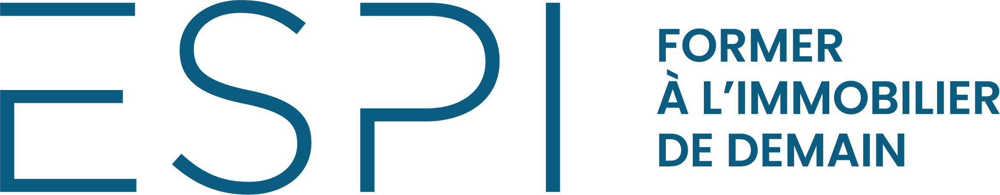
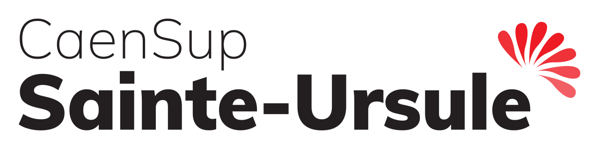

Un parcours qui combine formation commerciale, expériences terrain en immobilier et engagement citoyen.
Sept. 2026 – admission validée
Bachelor GESAI – 3ème année

ESPI – Campus Levallois-Perret
Gestionnaire d'Affaires Immobilières. Intégration directe en 3e année après sélection sur dossier et entretien face à deux enseignants-chercheurs et un professionnel du secteur. Objectif : Master spécialisé à la suite.
Admission confirmée · Sept. 20262026
Sept. 2024 – Juill. 2026
BTS NDRC

CaenSup Sainte-Ursule – Caen
Négociation et Digitalisation de la Relation Client. Formation aux techniques commerciales, gestion de la relation client et outils digitaux.
Pilotage de l'animation commerciale d'une réunion de vente à domicile : préparation de l'offre, présentation produit, argumentation personnalisée, gestion des objections, suivi des commandes. Résultats primés lors des rencontres Noham.
VenteArgumentationGestion objectionsRésultats
SDIS Calvados
Volontaire • 4 ans
Sapeur-pompier Volontaire
SDIS du Calvados – Centre de Vire Normandie
Mars 2022 – Aujourd'hui
Engagement opérationnel depuis l'âge de 17 ans au sein de la caserne de Vire-Normandie. Une école de rigueur, de coordination d'équipe et de gestion du stress en contextes à forte pression — des compétences directement transposables au monde professionnel.
RigueurTravail d'équipeGestion du stressSang-froidEngagement